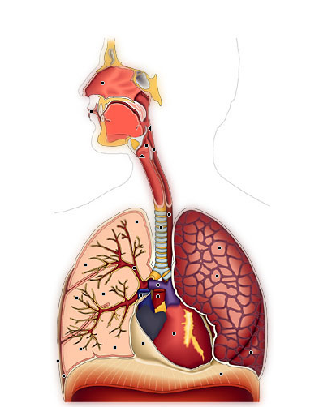
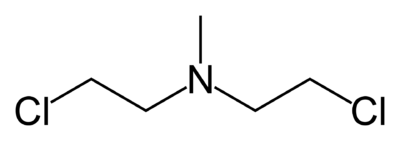

TPE 1ère: le gaz moutarde
Comment une arme destructrice est elle devenue un espoir pour les malades?
Par David Duarte, Violette Cullati et Hugo Coulon
Plan
- Le gaz moutarde une arme destructrice
- Les propriétés du Gaz Moutarde
- Les effets sur le corps et l’environnement
- Les moutardes azotées : un espoir pour les malades
- Les moutardes azotée, une variation du Gaz Moutarde
- Les utilisations en médecine
Le Gaz Moutarde
Caractéristiques
- Première utilisation: Ypres (Belgique)
- Reconnaisable à: Couleur Jaunâtre & Odeur de Moutarde
- Consequences: 400 000 blessés lors de la première Guerre Mondiale
::: :::
Le gaz moutarde
Synthèses
| DATE | CHIMISTE(S) | EQUATION |
|---|---|---|
| 1860 | Frederick Guthrie | SCl₂ + 2C₂H₄ → C₄H₈Cl₂S |
| 1916 | (LOST) LOmmel & STeinkopf | C₄H₁₀O₂S + 2HCl → 4C₄H₈Cl₂S + 2H₂O |
| 1917 | André Job et Gabriel Bertrand | S₂Cl₂ + 2C₂H₄ → C₄H₈Cl₂S + S |
Le gaz moutarde
Propriétés
| Nom | sulfure de 2,2'‑dichlorodiéthyle |
| Formule brute | C₄H₈Cl₂S |
| Apparence forme impure | liquide brunâtre et huileux |
| Apparence forme pure | liquide incolore, huileux |
| Masse molaire (g/mol) | 159,08 |
| T° de fusion (°C) | 13,5 |
| T° d'ébulition (°C) | 216 |
| Famille | Thioéthers |
:::
Le Gaz Moutarde
Les effets sur le corps
Le Gaz Moutarde
Les effets sur le corps
Le Gaz Moutarde
Les effets sur le corps
Le Gaz Moutarde
Les effets sur le corps

Les moutardes azotées
Propriétés
- Agent Alkylant: peux prevenir la replication de l'ADN
- Atome de Soufre → Groupement Azoté isostère: Reduit la toxicité
Examples de Moutardes Azotées:
- Chlorméthine
- Chlorambucil
- Melphalan
- ...
Les moutardes azotées
La Chlorméthine
